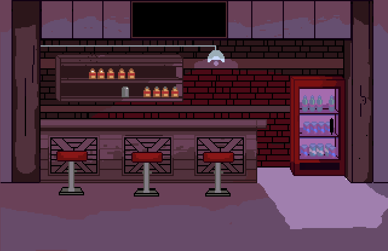

Iwan Roberts (born 26 June 1968) is a Welsh former professional footballer who played as a striker, including for the Welsh national team. His footballing career started at Watford in 1986. He also represented Huddersfield Town, Wolverhampton Wanderers, Gillingham and Cambridge United. He made 647 league appearances, almost half as a player for Norwich City, whom he represented for seven years. He scored 61 goals in total over the three seasons, and was elected to the Norwich City F.C. Hall of Fame. Since retiring as a player, Roberts, who speaks fluent Welsh, has worked as a commentator for Sky Sports, BBC Radio Cymru and BBC Cymru Wales. His 2004 book, All I Want for Christmas ..., a reference to his gap-toothed appearance, prompted praise, but also controversy over an admission that he once intentionally stepped on a player's back. In recent years, Roberts has supported research into dementia, and has attributed his own memory difficulties to heading a football.
 temp1